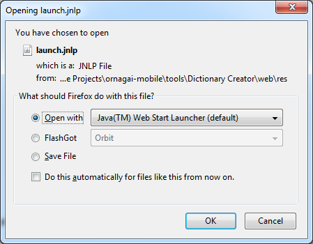
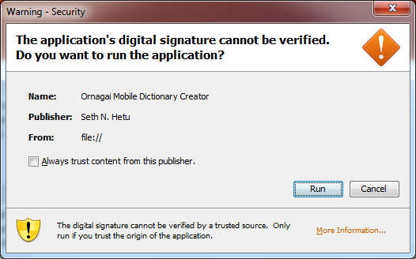
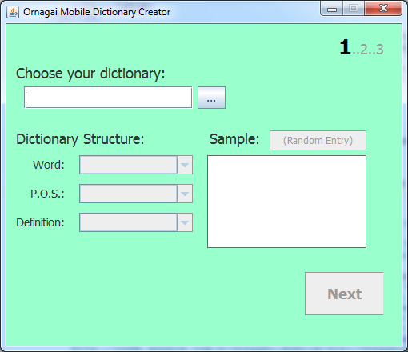
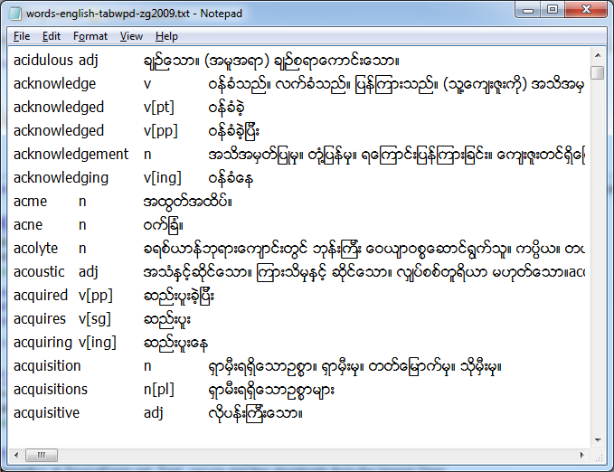
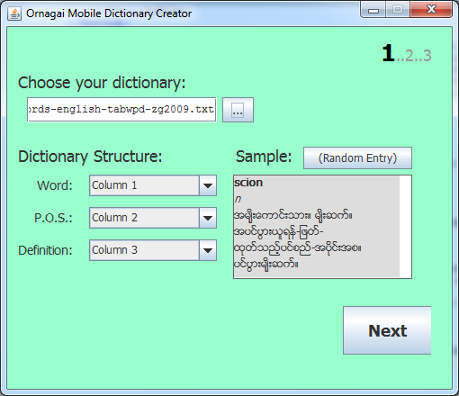
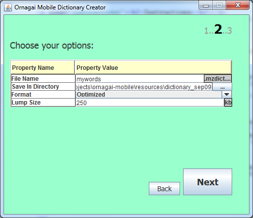
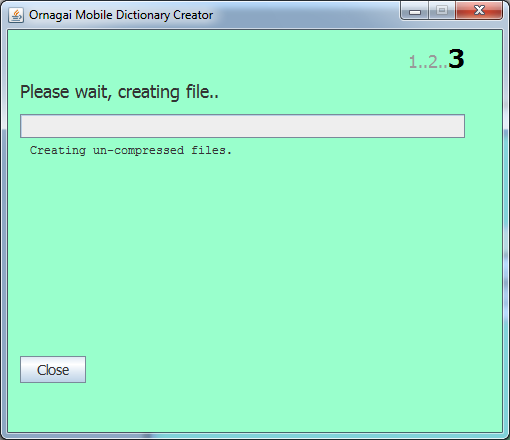
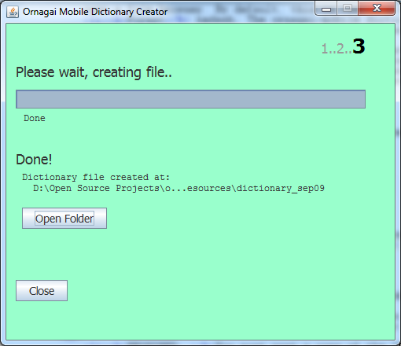
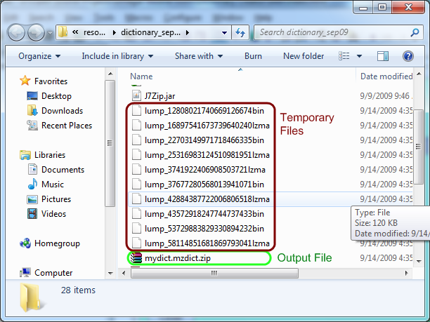

Thank you for downloading the Ornagai mobile dictionary creator. This program will help you create custom dictionaries for use with the Ornagai mobile program for J2ME phones.
Please click below to run the program:
You should choose to open the program with Java Web Start. If you do not have this option, make sure you've downloaded and installed Java 1.5 or higher..

Click "Ok"
You will have to accept the certificate, to allow the program to write the new file to your hard drive:

Click "Run"
Creating the dictionary is a three-step process. To start the process, click on the "Ornagai Converter" button above to run the program.
After loading the program, you will see the following screen:

Click on the "..." button, which will open a file browser. Then, browse to your source dictionary and open it. A source dictionary is a tab-separated text file that contains your dictionary's entries, encoded in Zawgyi-One (2008 or 2009 version). It looks something like this:

If the file opened correctly, you should see a sample definition appear in the lower-right portion of the window.

You should see the word in bold, the part of speech in italics, and the defintion in normal text. If this looks ok to you, click "Next" to go to step 2.
If this does not look ok, you can change which column to use for the "word", "part of speech", and "definition" using the drop-down lists on the left. If you want to see how this looks for a different word, click on "(Random Entry)" to load a random entry from the dictionary.
The second page looks like this:

You have several options to set for the resultant dictionary. The default options are well-chosen, so just click "Next" unless you have a good reason to change anything:
Once you are staisfied with your options, click "Next" to start creating the dictionary.
The third page looks like this:

Just wait, the program is creating and compressing your dictionary. After 60 seconds, the process should be done:

At this point,you can click on the "Open Folder" button to open the folder that contains the dictionary file. (It will try to use Nautilus on Linux; else, just browse there yourself.) You may see some temporary files with long file names; simply click the "Close" button on the converter program to delete them.

Congratulations, you are done! Now just copy the dictionary file to your phone (or re-compile it into the source) and configure ornagai-mobile to use it. It will load automatically after that.
Yes, the program and all related resources are free. You can post the applet yourself on your own page, if you want to allow people to make their own dictionaries on your site. We've got a few rules and suggestions, though:
You can always download the latest version of our program from our project website:
http://code.google.com/p/ornagai-mobile/
The project page also contains a wiki, issue tracking, and the full source code, in case you want to compile the program yourself.
Ornagai mobile doesn't use Unicode 5.1; rather, it uses the Zawgyi-One encoding. You can use the Burglish font converter to convert Unicode dictionaries to Zawgyi-One format.
The reason we don't use Unicode is because most cellular phones do not support Myanmar Unicode. Instead, we embed a copy of Zawgyi-One with our dictionary, which allows us to display Burmese text on any phone.
We look forward to mobile phones providing full Unicode support; it would make our code a lot simpler.
The MIT License
Copyright (c) 2009 Thar Htet, Seth N. Hetu
Permission is hereby granted, free of charge, to any person obtaining a copy
of this software and associated documentation files (the "Software"), to deal
in the Software without restriction, including without limitation the rights
to use, copy, modify, merge, publish, distribute, sublicense, and/or sell
copies of the Software, and to permit persons to whom the Software is
furnished to do so, subject to the following conditions:
The above copyright notice and this permission notice shall be included in
all copies or substantial portions of the Software.
THE SOFTWARE IS PROVIDED "AS IS", WITHOUT WARRANTY OF ANY KIND, EXPRESS OR
IMPLIED, INCLUDING BUT NOT LIMITED TO THE WARRANTIES OF MERCHANTABILITY,
FITNESS FOR A PARTICULAR PURPOSE AND NONINFRINGEMENT. IN NO EVENT SHALL THE
AUTHORS OR COPYRIGHT HOLDERS BE LIABLE FOR ANY CLAIM, DAMAGES OR OTHER
LIABILITY, WHETHER IN AN ACTION OF CONTRACT, TORT OR OTHERWISE, ARISING FROM,
OUT OF OR IN CONNECTION WITH THE SOFTWARE OR THE USE OR OTHER DEALINGS IN
THE SOFTWARE.